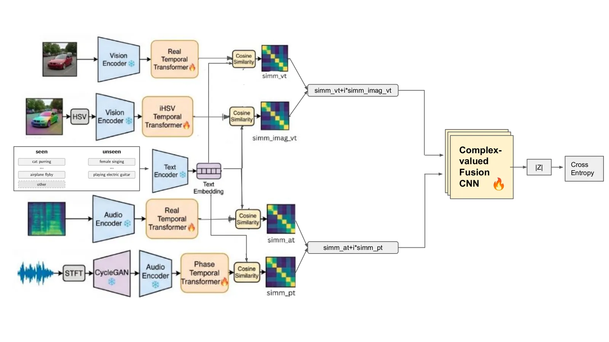
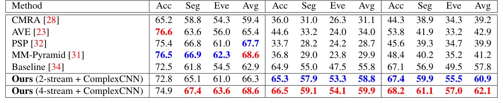
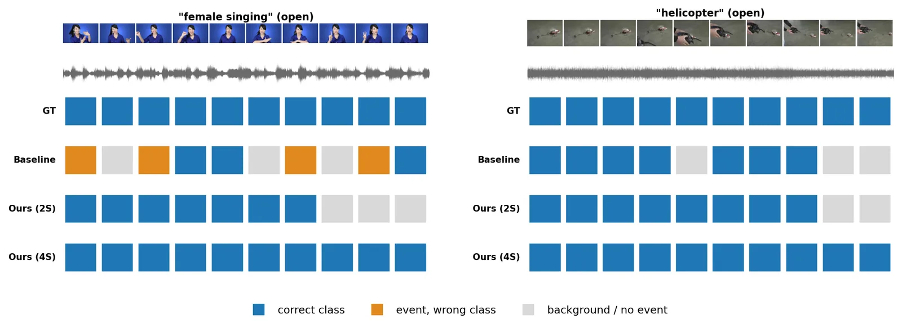

O problema: fundir áudio e vídeo sem perder informação
Localização de eventos audiovisuais (AVEL) é a tarefa de marcar cada segundo de um vídeo com a classe de evento que está acontecendo simultaneamente na imagem e no som: uma guitarra sendo tocada, um helicóptero passando, alguém cantando. A versão de vocabulário aberto (OV-AVEL) vai além: o modelo precisa reconhecer classes que nunca apareceram durante o treinamento, apenas a partir de seus nomes em texto.
A receita atual usa modelos de fundação multimodais congelados — como ImageBind ou LanguageBind — que projetam áudio, vídeo e texto em um espaço compartilhado de 1024 dimensões. Para cada segmento de vídeo e cada classe candidata, o sistema calcula duas similaridades de cosseno: uma entre o frame visual e o nome da classe (visual-texto), outra entre o espectrograma de áudio e o nome da classe (áudio-texto). O gargalo está na fusão: como combinar esses dois números em uma única pontuação?
Métodos anteriores usam regras fixas e escalares: média geométrica ou média ponderada. Essas operações colapsam o par de similaridades em um único valor, descartando um grau de liberdade que poderia variar entre classes e segmentos. Além disso, os pipelines existentes jogam fora a fase do áudio: o encoder padrão do ImageBind consome apenas o espectrograma log-mel (magnitude da transformada de Fourier de curto prazo), ignorando a fase — que carrega informações sobre onsets, harmônicos e transientes que a magnitude sozinha não captura.
A ideia: tratar similaridades como números complexos
Em vez de colapsar as duas similaridades em um escalar, os autores propõem tratá-las como a parte real e a parte imaginária de um número complexo. A similaridade visual-texto vira a parte real; a similaridade áudio-texto vira a parte imaginária. Esse par complexo é então processado por uma rede neural de valores complexos (ComplexCNN) de cinco camadas, que aprende a fusão durante o treinamento.
A arquitetura tem duas contribuições testáveis. Primeiro, a fusão complexa de 2 streams: RGB e mel-spectrogram são codificados pelo modelo congelado, refinados por blocos de atenção temporal (os únicos pesos treináveis além da fusão), e suas similaridades com o texto formam um tensor complexo que alimenta a ComplexCNN. Segundo, uma extensão de 4 streams: cada modalidade ganha um stream companheiro — transformada iHSV imaginária para visão, espectrograma de fase traduzido por CycleGAN para áudio — de modo que cada modalidade forme seu próprio par complexo (conteúdo + estrutura).
A motivação para o iHSV é simétrica: se o áudio forma naturalmente um par complexo (magnitude + fase), a visão também precisa de um companheiro para que a ComplexCNN receba dois canais complexos. A transformada iHSV preserva a estrutura cíclica da matiz (hue) através de sin(H) e a informação cromática através da saturação S, gerando uma imagem sintética de 3 canais que o mesmo encoder congelado Ev ingere.

Como funciona: streams visuais e de áudio como pares complexos
Um vídeo de 10 segundos é fatiado em T=10 segmentos de um segundo. Cada segmento é representado por um frame RGB de 224×224 pixels e um espectrograma log-mel de 128 bins de frequência por 204 janelas de tempo. O modelo também recebe um conjunto de prompts de texto T = {τ₁, ..., τ_C, 'Background'}, onde C é o número de classes candidatas (que podem ser totalmente novas no teste).
O ImageBind ViT-H congelado codifica áudio, vídeo e texto em vetores de 1024 dimensões: fa = Ea(a), fv = Ev(V), ft = Et(T). Esses encoders permanecem congelados; apenas os blocos de atenção temporal e a ComplexCNN são treinados. Isso preserva a propriedade de vocabulário aberto: uma classe nunca vista é classificada simplesmente adicionando seu nome ao conjunto de prompts na inferência.
Para a visão, a parte real vem do RGB padrão. Os features fv passam por um módulo de auto-atenção temporal Φv que troca informação entre os T passos de tempo, produzindo f̃v. A similaridade de cosseno com os features de texto gera a parte real: Svt[t,c] = cossim(f̃v[t], ft[c]). A parte imaginária vem do companheiro iHSV: cada frame RGB é convertido para HSV (H ∈ [0,2π], S e V ∈ [0,1]) e então transformado no triplet imaginário i(vt) = (V, S·sin(H), S). Esse triplet é tratado como uma imagem HSV sintética, convertido de volta para RGB, normalizado com as estatísticas do ImageBind e codificado pelo mesmo Ev congelado. Um segundo bloco de atenção temporal ΦI_v refina esses features, gerando a parte imaginária SI_vt. O stream visual emite assim um tensor complexo Zv = Svt + i·SI_vt de dimensão T×(C+1).
Para o áudio, a parte real vem do mel-spectrogram padrão, processado de forma análoga com atenção temporal Φa, produzindo Sat. A parte imaginária vem da fase do STFT. Como o ImageBind espera um mel-spectrogram de entrada, os autores usam uma CycleGAN pré-treinada e congelada (GIF→mel) que traduz a fase instantânea (IF) em um pseudo-mel de mesma forma (128×204). Esse pseudo-mel de fase é codificado pelo mesmo Ea congelado, refinado por Φφ e gera Spt. O stream de áudio emite Za = Sat + i·Spt.

Fusão por rede neural complexa
Os dois tensores complexos Zv e Za, cada um de dimensão T×(C+1), são empilhados como os dois canais de entrada de uma ComplexCNN de cinco camadas. Redes neurais de valores complexos (CVNNs) parametrizam pesos como números complexos W = Wr + i·Wi e implementam convoluções complexas: (W * Z) = (Wr * Zr - Wi * Zi) + i·(Wr * Zi + Wi * Zr). Essa estrutura acopla os canais real e imaginário de forma mais restrita que uma CNN real de mesma contagem de parâmetros, impondo uma simetria que — segundo os experimentos — ajuda a generalização.
A saída da ComplexCNN é um tensor complexo de dimensão T×(C+1). A magnitude |Z| desse tensor fornece as pontuações finais de classe para cada segmento. Durante o treinamento, essas pontuações são comparadas com os rótulos ground-truth via cross-entropy. O sistema prevê a classe com maior magnitude para cada segmento; métricas de avaliação incluem acurácia por segmento (Acc), F1 no nível de segmento (Seg-F1) e F1 no nível de evento (Event-F1), esta última a mais estrita pois penaliza tanto falsos positivos quanto segmentos perdidos.
Uma variante de 2 streams também é testada: apenas RGB e mel, sem os companheiros iHSV e fase, mas ainda com fusão complexa. Essa variante isola o ganho da fusão complexa em si, separado do ganho dos streams auxiliares.
Resultados: estado da arte em dois benchmarks
Os experimentos cobrem dois benchmarks de vocabulário aberto. OV-AVEBench é o conjunto introduzido por Zhou et al. (CVPR 2025) com splits de classes vistas, não vistas e total. AVE-OV é uma adaptação do dataset AVE clássico para o regime de vocabulário aberto, proposta pelos próprios autores deste paper. Em ambos, o protocolo é idêntico: encoders congelados, fusão aprendida, classes de teste nunca vistas no treinamento.
No OV-AVEBench, o modelo de 4 streams com fusão complexa atinge 66,5% de acurácia, 59,1% de Seg-F1 e 54,1% de Event-F1 no split de classes não vistas — ganhos de +1,6 / +4,1 / +6,6 pontos sobre o baseline fine-tuned do paper original. No split de classes vistas, os ganhos são ainda maiores: +2,4 / +5,6 / +9,1. No total (vistas + não vistas), o modelo proposto alcança 68,2 / 61,1 / 57,0%, superando todos os métodos anteriores (CMRA, AVE, PSP, MM-Pyramid) por margens substanciais.
No AVE-OV, os ganhos são ainda mais dramáticos. O baseline fine-tuned atinge 58,0 / 46,7 / 40,8% no split não visto; o modelo de 4 streams sobe para 60,7 / 51,9 / 50,4% (+2,7 / +5,2 / +9,6). No split visto, o salto é de 82,3 / 74,6 / 70,5% para 88,0 / 82,9 / 83,1% (+5,7 / +8,3 / +12,6). O baseline sem treinamento (apenas média geométrica das similaridades congeladas) colapsa neste dataset menor, atingindo apenas 31,5% de média total — confirmando que a fusão aprendida é essencial para desempenho de vocabulário aberto.
Ablações isolam as duas contribuições. Comparando fusão complexa vs. real com mesmo número de streams (2 ou 4), a versão complexa sempre vence: no OV-AVEBench, passar de real para complexa em 2 streams adiciona +7,9 pontos de Event-F1; no AVE-OV, +15,9 pontos. Adicionar os streams auxiliares (iHSV + fase CycleGAN) sobre a fusão complexa de 2 streams traz ganhos menores mas consistentes: +0,8 Event-F1 no OV-AVEBench, +2,3 no AVE-OV (split não visto). A fase traduzida por CycleGAN supera a fase instantânea bruta (IF) em +2,2 pontos de Event-F1, mostrando que a tradução para formato mel ajuda o encoder congelado.

Exemplos qualitativos e transferência entre datasets
Exemplos visuais no paper mostram predições segmento a segmento em vídeos de classes não vistas. Em um clipe de 'female singing', o baseline confunde o evento com uma classe acusticamente similar (laranja) e perde vários segmentos para background (cinza); o modelo de 2 streams recupera a maioria dos segmentos; o de 4 streams acerta todos (azul). Em um clipe de 'helicopter', o baseline perde segmentos para background; ambos os modelos propostos acertam todos.
Transferência cross-dataset testa a capacidade de generalização: treinar no split visto de um dataset e testar no split não visto de outro. A fusão complexa de 2 streams mantém margem positiva sobre o baseline nas duas direções (OV-AVEBench → AVE-OV e vice-versa), com ganhos de +3,6 e +8,5 pontos de média. O modelo de 4 streams transfere de forma desigual: cai -4,8 pontos de acurácia em OV→AVE mas ganha +2,1 em AVE→OV, sugerindo que os streams auxiliares podem sobre-ajustar ao dataset de treinamento quando este é maior.

Limitações e o que fica em aberto
O paper não esconde as limitações. Primeiro, a transferência cross-dataset do modelo de 4 streams é irregular: ele melhora em uma direção mas piora em outra, sugerindo que os streams auxiliares (iHSV e fase CycleGAN) podem sobre-ajustar ao dataset de treinamento quando este é grande. Os autores especulam que a natureza mais complicada da arquitetura de 4 streams pode reduzir a capacidade de transferência.
Segundo, a escolha do companheiro visual (iHSV) e da tradução de fase (CycleGAN) é empírica, não derivada de primeiros princípios. Outras transformações de cor ou outras arquiteturas de tradução poderiam funcionar; o paper não explora esse espaço. A CycleGAN usada para traduzir fase em pseudo-mel foi treinada em um dataset não especificado e permanece congelada; não está claro como ela generalizaria para domínios de áudio muito diferentes.
Terceiro, os experimentos cobrem apenas dois benchmarks de vocabulário aberto, ambos com vídeos de 10 segundos e classes de eventos relativamente genéricas (instrumentos musicais, sons de animais, veículos). Não está claro como a arquitetura se comportaria em vídeos mais longos, com eventos mais sutis ou em domínios especializados (medicina, vigilância). O paper também não compara custo computacional: a ComplexCNN adiciona overhead em relação à média geométrica escalar?
Finalmente, o regime de vocabulário aberto testado aqui ainda é relativamente controlado: as classes de teste são nomeadas explicitamente e o modelo escolhe entre um conjunto fechado de candidatos. Vocabulário verdadeiramente aberto — onde o modelo precisa propor classes sem uma lista — permanece fora do escopo.
O que levar deste paper
A contribuição central é conceitual: em vez de colapsar similaridades áudio-texto e vídeo-texto em um escalar com uma regra fixa, tratá-las como um número complexo e aprender a fusão com uma rede neural de valores complexos. Essa mudança de representação, sozinha, responde pela maior parte do ganho (+7,9 pontos de Event-F1 no OV-AVEBench, +15,9 no AVE-OV ao passar de 2 streams real para 2 streams complexa).
A segunda contribuição — enriquecer cada modalidade com um stream companheiro (iHSV para visão, fase CycleGAN para áudio) — adiciona um ganho menor e mais frágil, especialmente em transferência cross-dataset. Mas a ideia de formar pares complexos conteúdo-estrutura para cada modalidade é elegante e pode inspirar arquiteturas futuras.
Do ponto de vista prático, o método estabelece novo estado da arte em dois benchmarks de vocabulário aberto, com ganhos consistentes nas três métricas (Acc, Seg-F1, Event-F1) e nos três splits (visto, não visto, total). A arquitetura mantém os encoders congelados, o que preserva a eficiência e a capacidade de adicionar novas classes sem re-treinamento. Para quem trabalha com localização de eventos audiovisuais ou fusão multimodal, o paper oferece uma lição clara: representações complexas podem capturar graus de liberdade que escalares descartam, e a estrutura da parametrização complexa — não apenas a contagem de parâmetros — importa para generalização.
O que fica
- Fusão complexa de similaridades áudio-texto (imaginário) e vídeo-texto (real) via ComplexCNN supera regras escalares fixas, ganhando +6,6 pontos de Event-F1 em classes não vistas no OV-AVEBench.
- Streams auxiliares (iHSV para visão, fase CycleGAN para áudio) formam pares complexos conteúdo-estrutura, adicionando ganho menor mas consistente sobre a fusão complexa de 2 streams.
- Ablação mostra que o ganho vem da estrutura da parametrização complexa, não só de capacidade extra: CNN real com mesmos parâmetros fica atrás da ComplexCNN em +2,2 pontos de média.
- Transferência cross-dataset é irregular para 4 streams, sugerindo sobre-ajuste dos companheiros auxiliares ao dataset de treinamento; limitação reconhecida pelos autores.
Paper original: Open-Vocabulary Audio-Visual Event Localization via Complex-Valued Fusion
Comentários
Nenhum comentário ainda. Seja o primeiro.